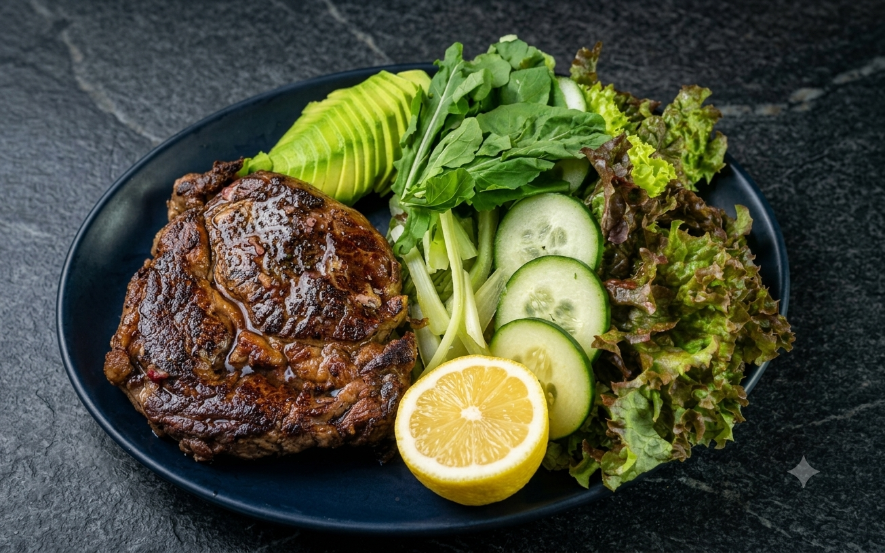
Grilled Ribeye Steak with seasonal vegetables
Tender ribeye steak, seasoned and cooked to perfection, served with a fresh selection of roasted seasonal vegetables.

Day's Catch Fish Tartare with Avocado
Fresh white fish seasoned with salt and pepper, served with a fine brunoise of cucumber, red bell pepper, and cilantro chiffonade. Emulsified with confit garlic paste, sesame oil, oyster sauce, and soy sauce, set over a traditional Peruvian leche de tigre
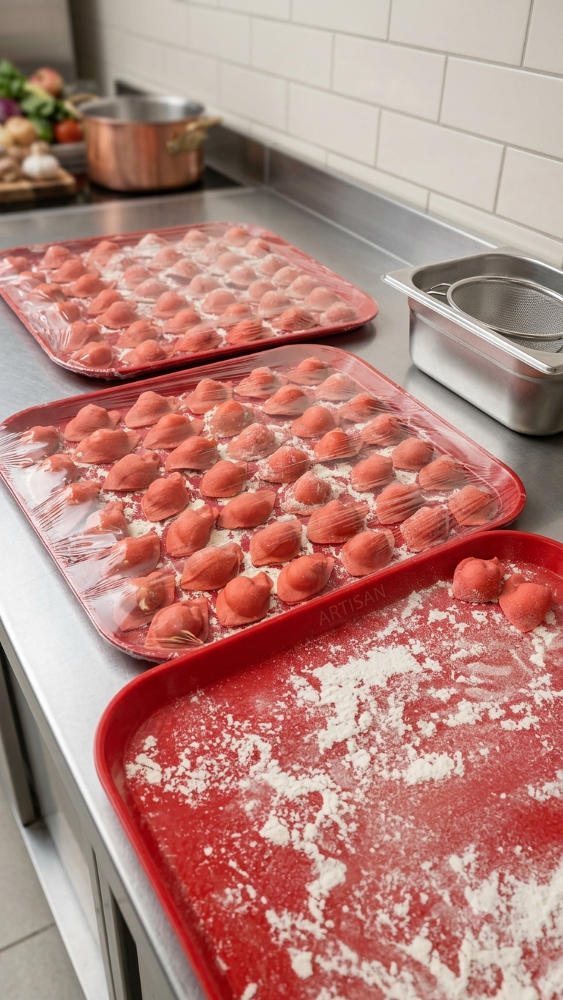
Homemade panzotti
Panzotti filled with shrimp, pineapple, and cream cheese.
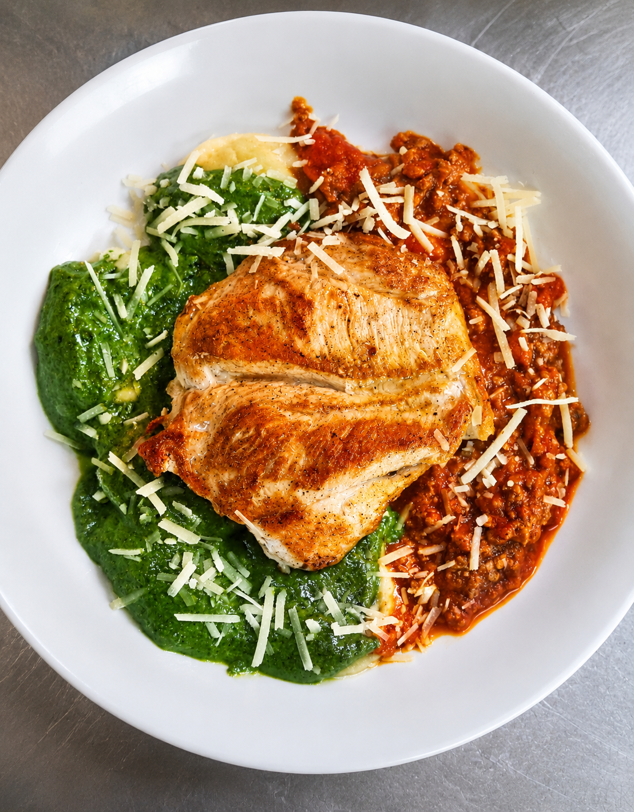
Grilled Chicken Breast with Sorrentinos in Bolognese and Pesto Sauce
Tender grilled chicken breast served alongside handmade sorrentinos, topped with a rich classic bolognese sauce and finished with fresh basil pesto.

Red Wine Glazed Beef with Mote Risotto
Tender beef glazed in a rich red wine reduction, served over a creamy mote barley risotto.

Smoked Salmon Toast With basil pesto, cream cheese, and confit cherry tomatoes
Crispy toasted sourdough topped with smooth cream cheese, fresh basil pesto, and delicate salmon slices, garnished with slow-cooked confit cherry tomatoes.
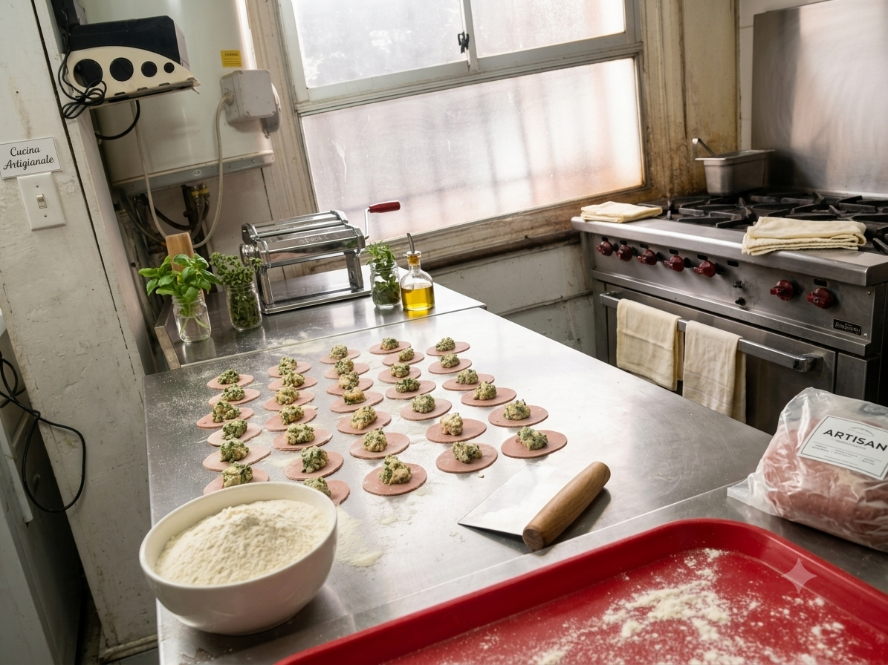
Handcrafted in the Italian Tradition
My work is always based on preserving tradition while adding subtle modern touches.
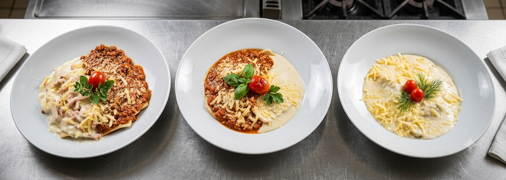
Pasta Trilogy
A selection of the finest handcrafted pastas from our menu

Fettuccine with Basil Pesto and Garlic Shrimp
Fresh handcrafted fettuccine tossed in aromatic basil pesto and paired with succulent garlic-sautéed shrimp, garnished with aged Parmesan flakes and fresh seasonal greens.

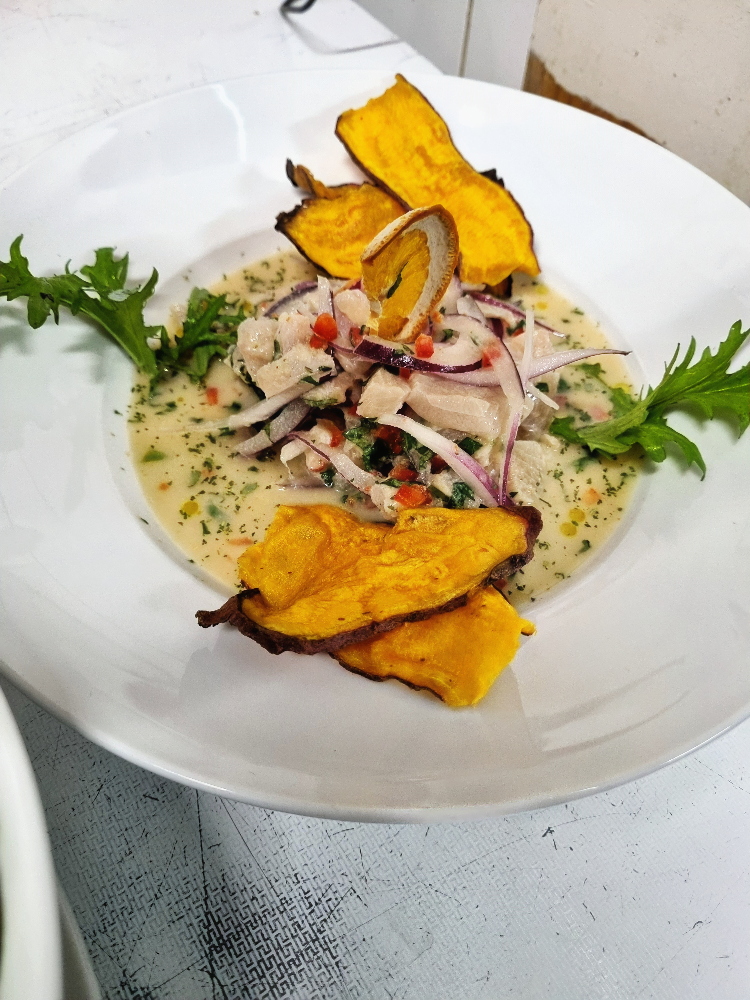
Ceviche de Reineta Peruvian Style
Reineta ceviche with classic Peruvian leche de tigre, served with Lollo lettuce and sweet potato chips.
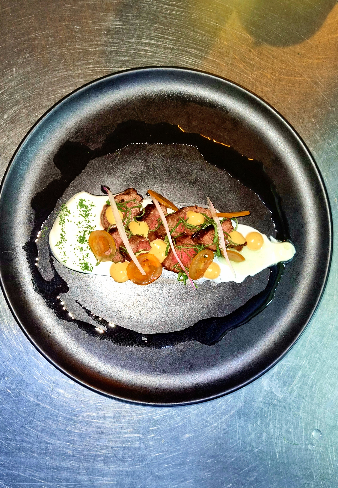
Ceviche Cítrico & Shrimp Bowl
Ceviche tradicional con chips de camote junto a bowl nutritivo con camarones.
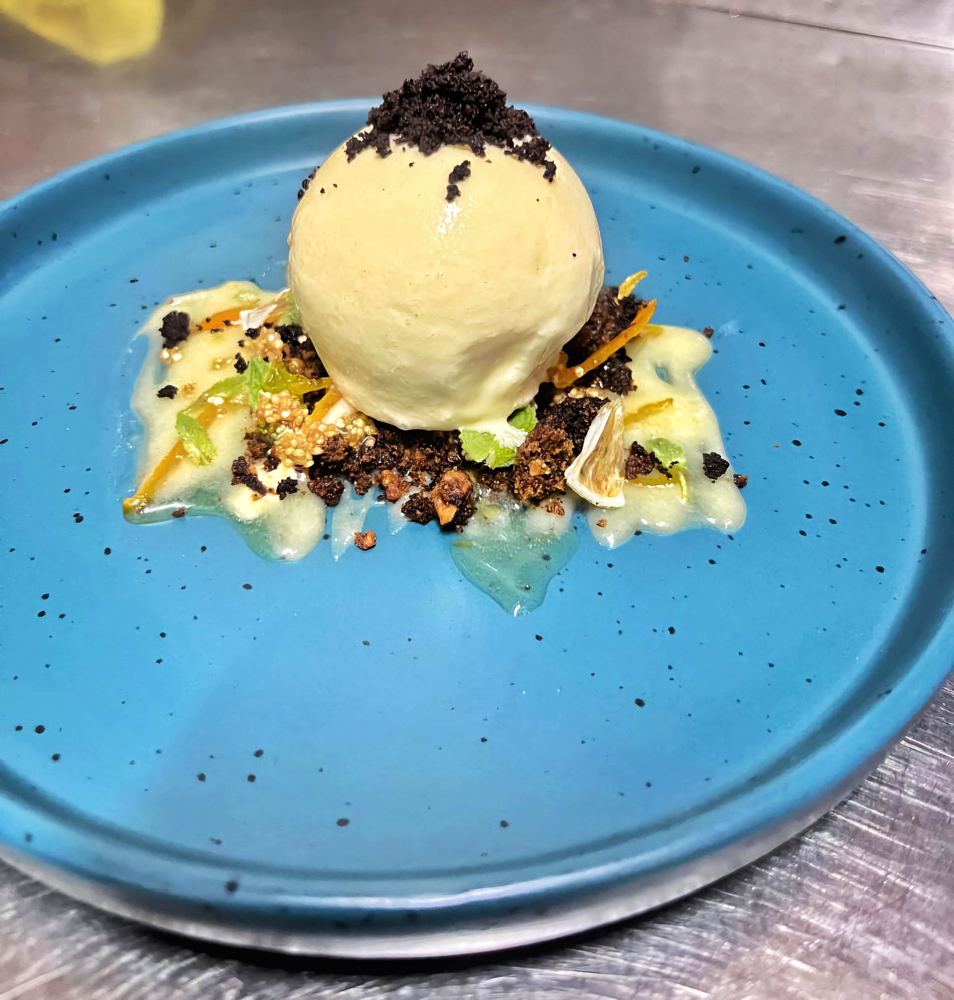
Ceviche Cítrico & Shrimp Bowl
Ceviche tradicional con chips de camote junto a bowl nutritivo con camarones.
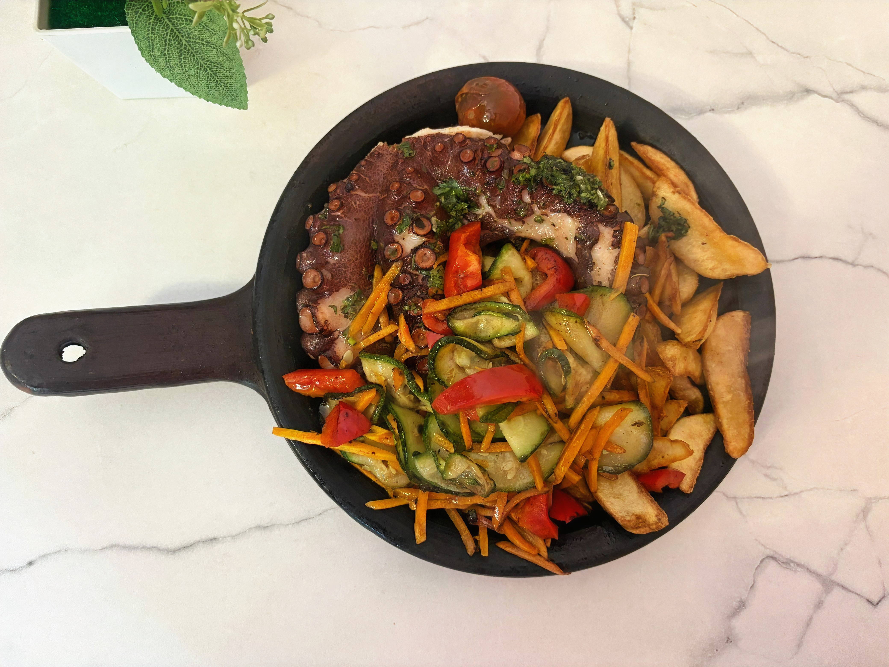
Ceviche Cítrico & Shrimp Bowl
Ceviche tradicional con chips de camote junto a bowl nutritivo con camarones.
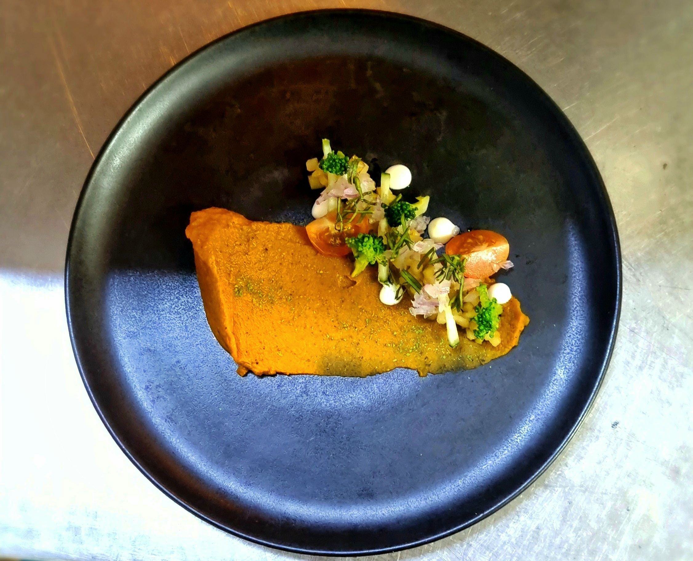
Ceviche Cítrico & Shrimp Bowl
Ceviche tradicional con chips de camote junto a bowl nutritivo con camarones.
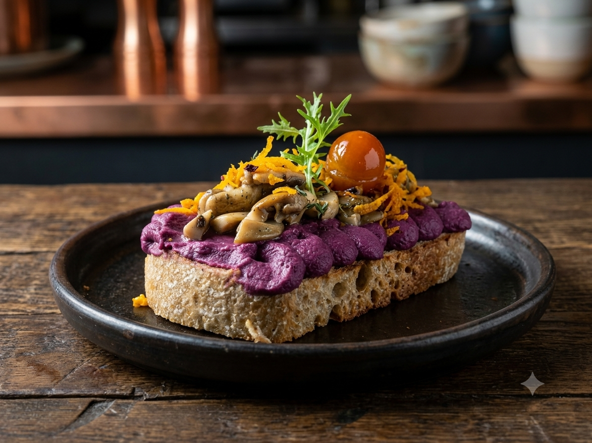
Ceviche Cítrico & Shrimp Bowl
Ceviche tradicional con chips de camote junto a bowl nutritivo con camarones.